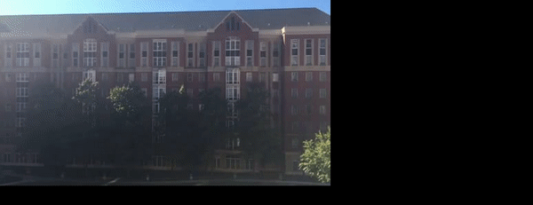

CS 4476 - Final Update
Team members
William Chen (wchen407), Nathan Lai (nlai8), Marcus Loo (mloo3), Gabor Siffel (gsiffel3)
Abstract
Shaky videos have been a problem since the video camera has been created, making it hard to understand what is going on in the video. For our final update, we finished testing several different feature detection algorithms and creating stabilized video examples with each. We connected the disparate parts of our code to accomplish this and be able to input a video and get a stabilized version of the video as the output in a single flow. Out of the three feature detection algorithms we implemented (ORB, SURF, and SIFT), SIFT has given us the best results out in terms of the final product of our image stabilization.
Teaser Figure
Introduction
Introduction
Shaky videos have been a problem since the video camera has been created. Shaky videos make it hard to understand what is going on in the video. However, if you were able to reduce the "shake" in a video, it would greatly increase the clarity of the video. We plan to make an application that allows a user to upload their video file to the website. A new video file will then be created, which will be a stabilized version of the original video file. Based on our research, our pipeline seems to be unique, but the way that we are solving each part of the pipeline, for instance feature detection, is not unique - we are using the ORB feature detector and have also tested using SURF and SIFT feature detection.
Approach
Separate the video into separate frames. We used opencv to be able to modify the video. All frames are converted into grayscale and the ORB, SIFT, and SURF feature detectors, is initiated and the matches between the two adjacent images were found. Using the Flann based matcher, the detected features between the two images were compared. From there, a ratio proposed by D. Lowe was used to determine how good the found matches were [1]. Figure 1 shows the detected points shown in red and a green line is drawn between matched features. The filtered points are then translated using homography to try and produce a more stabilized image.
Experiments and Results
We decided to test 3 different feature detection algorithms to see which performed better: ORB, SIFT, and SURF. The two metrics we cared about was execution time and accuracy in extracting features. Time was important because feature detection was occuring on every frame. If it took a long time to calculate, this step could be a major bottleneck. The other metric that we cared about, accuracy of feature extraction. This is obviously important because we feature extraction is the motivation of using these algorithms.
For these algorithms we wanted to find hyper parameters that would work the best with the two metrics that we cared about. In the OpenCV documentation they also gave recommendations on certain parameter values referencing papers pertaining to these algorithms. For example, the OpenCV documentation on SIFT recommended using 3 layers in each octave because the D. Lowe paper used it. In order to save time on experimentation, we decided to use these recommendations so we had less hyperparameters to use. We ultimately decided that the hyperparameters worth tuning for ORB, SIFT, and SURF were number of features, edge threshold, and hessian threshold respectively.
Original:


Looking at the results, it looks like orb does really well when there is high contrast. Most of the points are in areas near windows where it can see a distinct change between the dark inside and the white frame. Increasing the amount of features did not seem to increase that much more useful information. A lot it found overlapped or were very near existing points. In total, it 0.10 seconds to run all the ORB experiments.
Results for SIFT:
SIFT worked similarly in identifying the high contrast windows, however, as edge threshold increased, so did the amount of features that appeared. These increased features are useful because they were able to differentiate between the sky and the roof, which the other feature detections were unable to do well. The SIFT experiments took the longest to perform. It took 0.15 seconds.
Results for SURF:
The results of SURF are similar to ORB in the fact that in only was able to identify high contrast areas. As hessian threshold decreased, more features were identified, but some of these extra features did not look very accurate. However, SURF ran the fastest in these experiments. It took 0.06 seconds.
From the three different feature detection algorithms above, it seems like SURF would perform the best. While it was not able to identify the roof as well as SIFT did, it had already many features. The biggest factor in deciding that SURF was the best choice was the speed. When running our entire pipeline for video stabilization on a 5 second video SURF took 5.27 seconds and SIFT took 14.94 seconds with seemingly no difference in stabilization quality. With this speed, it would allow for longer videos to be created event faster.
Feature MatchingThere were a few parameters that we could adjust for FLANN feature matching. So we decided to change table number and key size and keep the rest as per recommended. For testing purposes we used ORB and decreased the number of features to 20 so the matches between frames are more noticeable.
table_number = 6, key_size = 12, matches = 10, time = .0007

table_number = 12, key_size = 20, matches = 7, time = .006
table_number = 32, key_size = 32, matches = 4, time = 22.95
While there are a different number of matches when using different parameters, the images above look almost identical. Because they are so similar, time would be an import factor in deciding which one to use. When table number was 6 and key size was 12 was the performance the fastest with .0007 seconds.
Qualitative Results
The resulting stabilization videos using SIFT, SURF and ORB feature matching algorithms are shown below:
Resulting stabilization video using SIFT
Resulting stabilization video using SURF
Resulting stabilization video using ORB
The resulting video from SIFT is qualitatively the most stable one, while ORB seems the least stable. All three videos have frames translating to different places when attempting to identify and stabilize the features. The features detected in ORB seems to be the furthest away from each other, thus having jittery frames. With SURF, the transition between frames are still jittery, but it appears to be smoother than the video returned by ORB matching. In contrast, with fine tuning the input parameters of SIFT, the video frames are less jittery and the transition between frames are the smoothest out of all three methods tested.
Conclusion and Future Work
Using SIFT, SURF and ORB feature detection in conjunction with FLANN based feature matching, videos were tested and attempted to be stabilized. Based on the experiments conducted, ORB is the weakest in terms of feature detection. While SURF is able to detect features the fastest, SIFT was able to detect features in much greater detail. For the picture used for experimentation, SIFT detected features in between the roof and the sky, which other algorithms tested cannot. Even though SIFT is able to capture more features, each algorithm is able to capture enough features for transformation in between frames to work. Qualitatively, the resulting stabilized video seems to be the fairly similar, with smooth transition in between frames. Going forward, further fine tuning of hyper parameters can help with the speed of feature detection without compromising the amount of features detected. With higher speed, the stabilization should be easier to use and more streamlined than it currently is. We also want to play around with being able to run stabilize higher resolution videos. As it currently stands, we are running out of memory when trying to stabilize large/hi-def videos.
References
[1] Cascade Classification - OpenCV 2.4.13.7 Documentation
https://docs.opencv.org/3.4/dc/dc3/tutorial_py_matcher.html
[2] “Feature Detection and Description.” Cascade Classification - OpenCV 2.4.13.7 Documentation
https://docs.opencv.org/3.0-beta/modules/features2d/doc/feature_detection_and_description.html?fbclid=IwAR26bvZJMQkKVIXFCNTxyY5h8QE6QJWey7aMCt-cFMkWnmQzaDnr1C2X88Y
[3] “Feature Detection and Description.” Cascade Classification - OpenCV 3.0.0-dev Documentation
https://docs.opencv.org/3.0-beta/modules/features2d/doc/feature_detection_and_description.html?fbclid=IwAR26bvZJMQkKVIXFCNTxyY5h8QE6QJWey7aMCt-cFMkWnmQzaDnr1C2X88Y
[4] A reddit bot that stabilizes gifs. They explained in their approach how averaging the transformations helped improve transformations moving out of view. This idea would be useful in our implemenation.
https://gitlab.com/juergens/stabbot
[5] Example of stabilizing a video in Matlab. Looking at how they determined similar points between frames seems useful.
https://www.mathworks.com/help/vision/examples/video-stabilization-using-point-feature-matching.html
[6] Theory and Basics of ORB (Oriented FAST and Rotated Brief) in OpenCV
https://opencv-python-tutroals.readthedocs.io/en/latest/py_tutorials/py_feature2d/py_orb/py_orb.html
[7] SIFT and SURF Feature Matching, Brute-Force and Flann Matcher
https://opencv-python-tutroals.readthedocs.io/en/latest/py_tutorials/py_feature2d/py_matcher/py_matcher.html